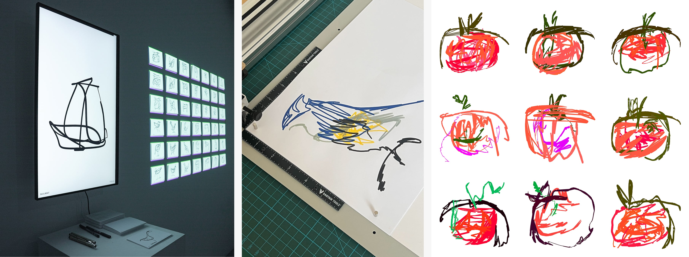
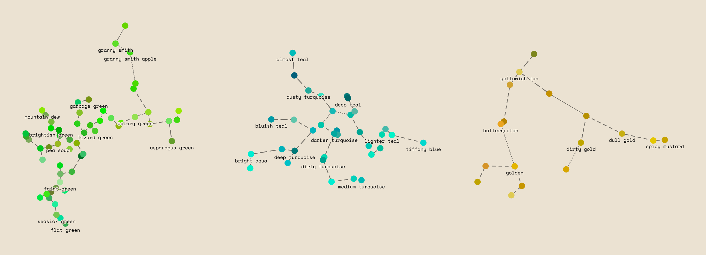
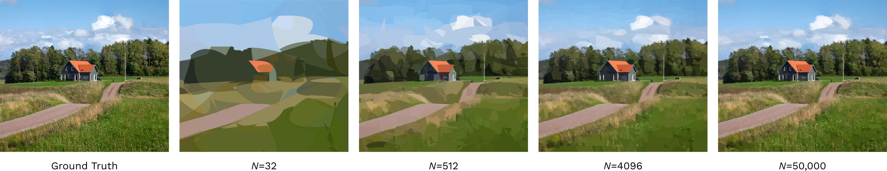

research
I'm currently pursuing my PhD, researching links between machine learning and computer art at the Creative Computing Institute at UAL in London, UK.
Creativity and Cognition 2026, London, UK
doi/10.1145/3803784.3809282

Explainable AI for the Arts Workshop 2026, London, UK
arXiv:2607.20131

Windfoil: Closed-Form Coverage for Real-Time and Differentiable Vector Graphics (TBD)
Current Research, Work in Progress
